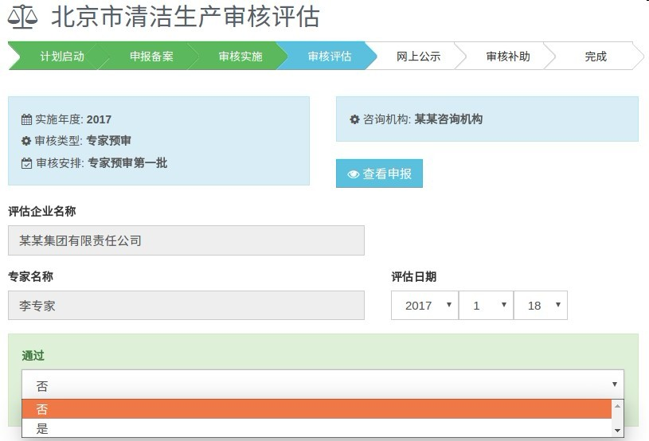
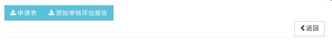
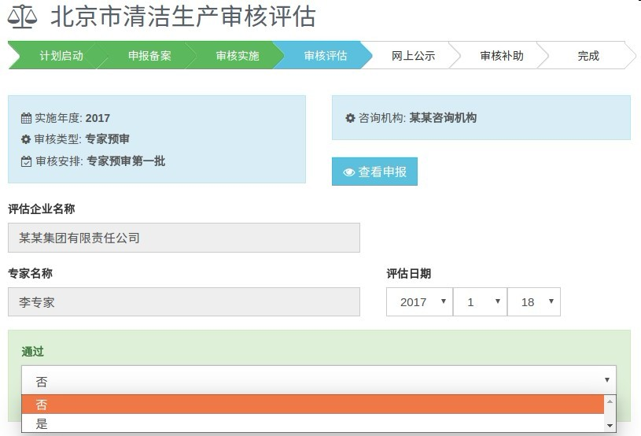
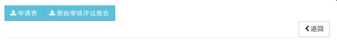

清洁生产管理系统填报使用说明
2.1 专家预审
进入系统后，会进入到“我负责的评估”页面。

点击“小天平”按钮，进入“北京市清洁生产审核评估”页面，开始对审核单位进行审核。

点击“查看”，可以查看审核单位的“清洁生产审核评估登记信息”，并可在页面左下方点击“申请表”和“原始审核评估报告”，下载查看审核单位的“清洁生产审核评估申请表”和“审核评估报告”，点击“返回”。

专家根据审核单位的“清洁生产审核评估申请表”和“审核评估报告”来选择是否通过专家预审。
根据审核单位上传报表和报告初审评价内容，在评估条目中选择，并给予修改建议。
进入系统后，会进入到“我负责的评估”页面。
点击“小天平”按钮，进入“北京市清洁生产审核评估”页面，开始对审核单位进行审核。
点击“查看”，可以查看审核单位的“清洁生产审核评估登记信息”，并可在页面左下方点击“申请表”和“原始审核评估报告”，下载查看审核单位的“清洁生产审核评估申请表”和“审核评估报告”，点击“返回”。
专家根据审核单位的“清洁生产审核评估申请表”和“审核评估报告”来选择是否通过专家预审。
根据审核单位上传报表和报告初审评价内容，在评估条目中选择，并给予修改建议。